Neste ponto em diante, todas as opções são dedicadas a melhorar o IDE de código. Portanto, todas as opções estarão em Tools->Options.
MINIMIZAR AO RODAR (dispensável): No Delphi - em algumas versões - ao rodar (F9) o programa, o comportamento comum é a IDE ser minimizada e isso ajuda quando lidamos com muitos programas simultaneamente, mas isso não ajuda se sua intenção for debugar e acompanhar a execução com breakpoints. Caso queira essa opção ligada então vá em ->Enviroment->Window e então marque a opção Hide IDE windows on run. Eu mantenho essa opção desligada porque faço muito uso de breakpoints no dia a dia.
MOSTRAR O NOME DO PROJETO (altamente recomendado): Parece sem importância, mas me faz falta ver o nome do projeto no título da IDE, se também faz falta para você então vá em ->Enviroment->Window e marque a opção IDE title starts with project name:
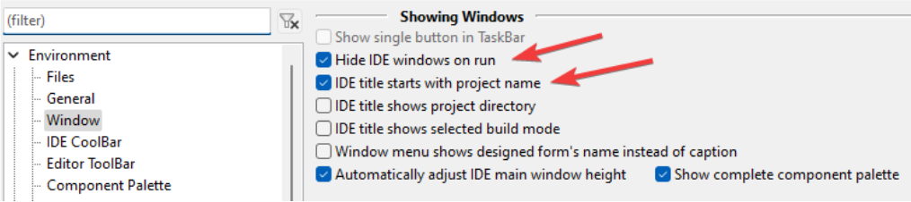
PERGUNTAR O NOME DO COMPONENTE AO ARRASTÁ-LO PARA O FORMULÁRIO: Algo que considero muito útil] é ao arrastar um componente ao formulário então ser obrigado a escolher um nome para ele. Será o fim dos label1, label2, label3…. pode ser um pouco trabalhoso até se acostumar, mas isso facilita muito a manutenção do código fontes depois. Vá em ->Enviroment->Form Editor e então ativar a opção Ask name on create.
REDUZA A GRADE XY DO FORMULÁRIO, aproveite para mudar o Grid size Y e Y de 8 para 4px para que os alinhamentos com o mouse sejam mais precisos:
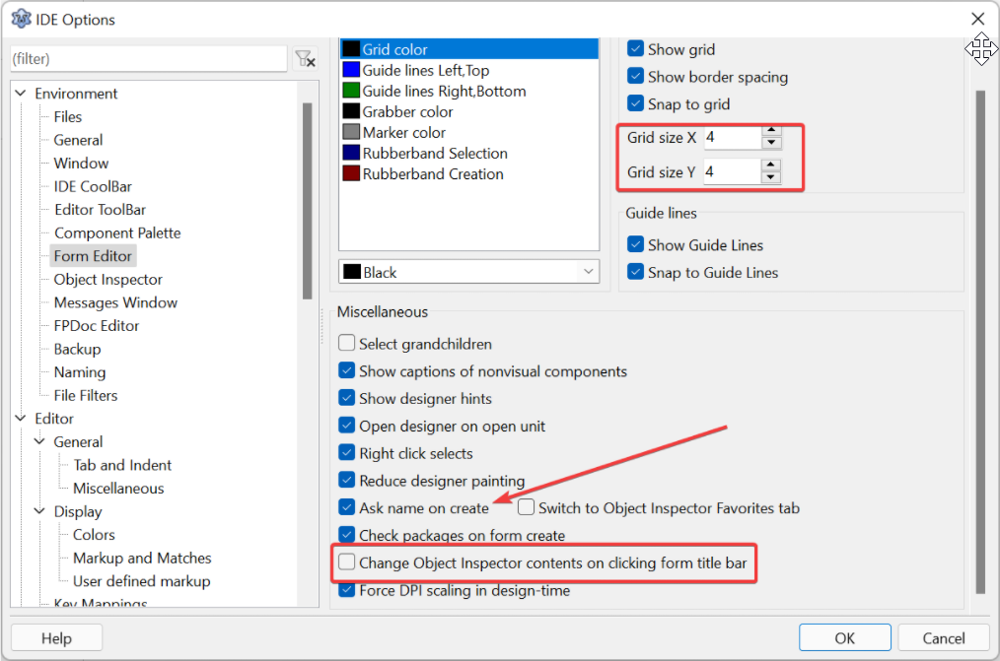
Opcionalmente, também poderá marcar Change Object Inspector contents on clicking form title bar, ela o ajudará quando precisar pegar as propriedades e eventos do form por apenas tocar no título do form, mas essa é uma opção que ainda não está funcionando, parece que foi planejada para a versão posterior.
Opcionalmente, também poderá ligar a opção show border spacing, ela o ajudará a reconhecer o espaço entre as bordas e o componente container quando o tamanho(borderwidth) da borda for zero, muito útil para quem faz uso de padding ou ancoragem de componentes visuais:
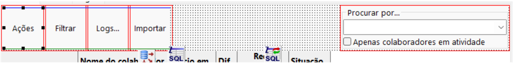
TAMANHO DA TABULAÇÃO (altamente recomendado): Tabulação muito espaçada pode incomodar, o padrão é 8, se quiser alterar este padrão vá em ->Editor->General->Tab and Ident e em Tab widths troque de 8 para 2 ou 4. Eu pessoalmente, prefiro “2”:
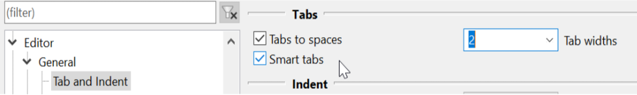
MARGEM DIREITA(altamente recomendado): É uma boa prática evitar o side-scrolling, por isso usamos uma linha vertical que indica o momento certo de quebrar a linha. Quando estamos em terminais programando com editores de texto como vim, emacs e outros não ousariamos mudar essa margem de 80 caracteres, mas estamos num ambiente gráfico e ninguém que eu conheça que use Delphi ou Lazarus o faz com resoluções baixas então parece ser cabível trocar de 80 para 100 ou mais caracteres, conforme sua preferência. Vá em ->Editor->Display e em Visible Right Margin e faça a alteração:
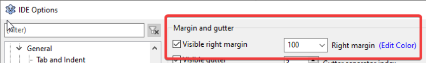
FONTE PADRÃO (altamente recomendado): Vá em ->Editor->Display e em “Default editor font” troque de Courier New 10 para Consolas no tamanho que preferir. Outra opção de fonte é a Noto Mono (Linux), ambas - na minha opinião - são muito melhores que a Courier que é o padrão do Lazarus e o Delphi:
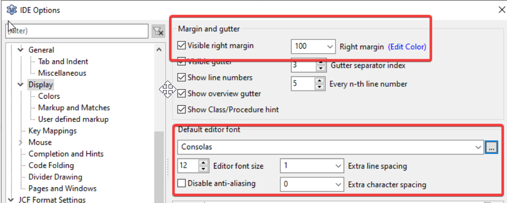
CORES (dispensável): Eu costumo manter as cores do FreePascal que me parecem bem adequadas, não há ganho real em trocá-las a menos que as cores do Delphi estejam bem enraizadas em você. Para trocar vá em ->Editor->Display->Colors e na parte superior onde está o estilo de cor “Default” você pode optar por “Delphi”:
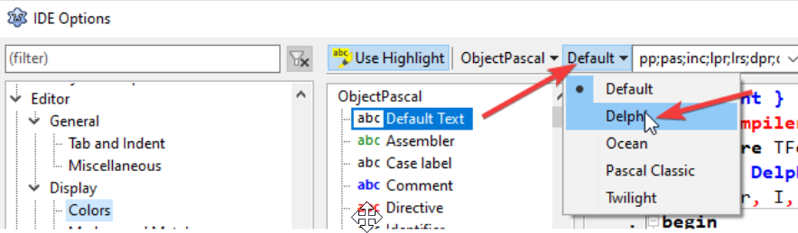
CORES DA LINHA ATUAL ONDE ESTIVER O CURSOR(altamente recomendado): Algo que acontece com certa frequência são os saltos de uma linha para outra com Ctrl+Seta, Alta+Seta, mas nem sempre localizamos rapidamente onde o cursor de edição se posicionou, por isso, vamos habilitar um Hightlight na linha em que o cursor estiver posicionado. Vá em ->Editor->Display->Colors e nos elementos na coluna do meio procure por “Current line highlight” e então na parte de baixo faça os ajustes de cores que lhe agradem mais, para mim o FUNDO VERDE COM FONTE BRANCA E EM NEGRITO é ideal. No mostrador a direita é exibido um exemplo de como ficará:
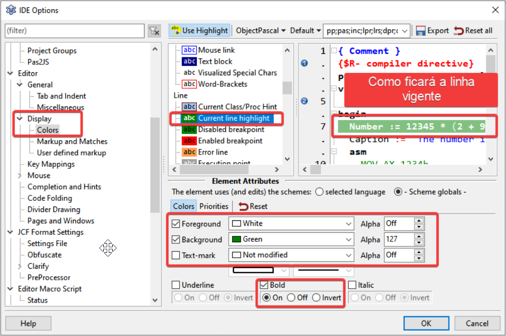
INDICADORES DE CORRESPONDÊNCIA (altamente recomendado): Algo muito útil é a colorização de blocos begin..end, if..then..else, etc… e realçar termos perigosos como a cláusula “not”, veja este exemplo:
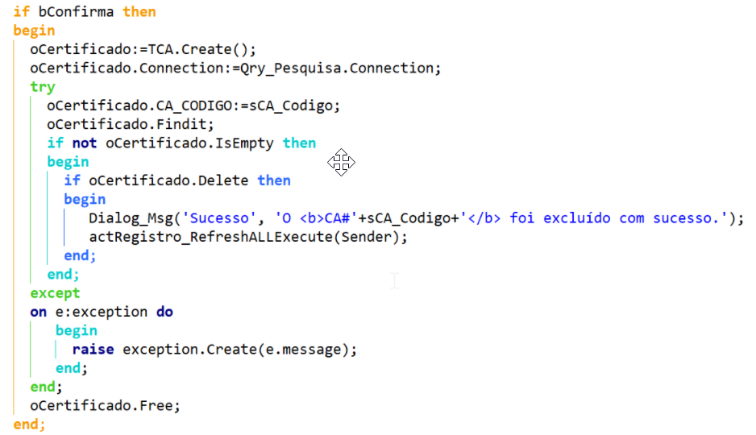
Como isso é feito? Apenas vá na opção ->Editor->Display->Markup and Matches->Outline e ligue-a:
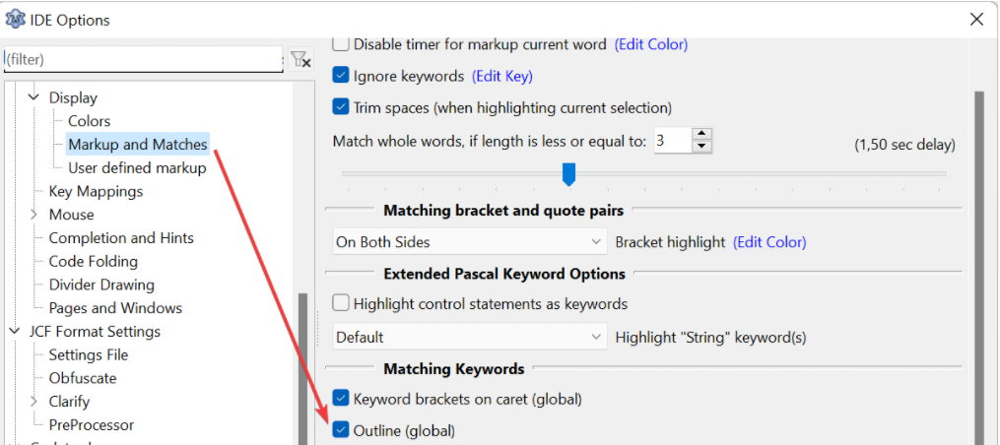
Daí então seus blocos serão colorizados, particularmente é mais rápido do que seguir com os olhos as linhas verticais em alguns tipos de blocos e fácil de ver blocos com a cláusula de negação “not”
OCULTAR O MOUSE NO EDITOR ENQUANTO DIGITA(dispensável): Uma boa parte de nós usamos notebook e o touchpad cria algumas inconveniências, no Linux é possível desligar o ponteiro quando estiver digitando e isso funciona para o ambiente inteiro, no Windows nem sempre existe essa opção, então neste caso vá em ->Editor->Mouse e marque a opção “Hide mouse pointer when typing”:
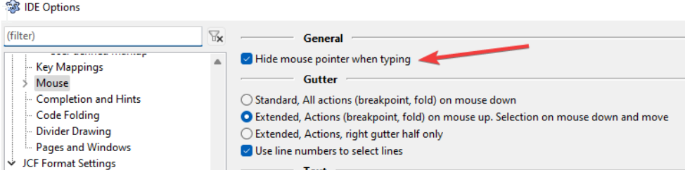
REMOVER MÉTODOS VAZIOS (altamente recomendado): Aqueles métodos OnCreate, OnClick,... onde foram criados SEM QUERER e ficam com o bloco vazio, pois é, por padrão o Lazarus os manterá. Se quiser alterar este comportamento você irá em ->Editor->Completion and hints (Completação e Dicas) e ligar a opção Auto remove empty methods (Auto remover métodos vazios):
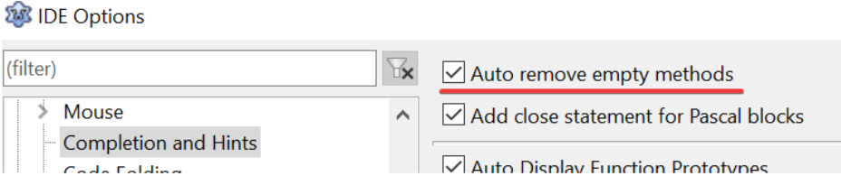
PULAR DIRETO PARA O CÓDIGO (altamente recomendado): O Lazarus tem um comportamento de Ctrl+Click sobre um método que está noutra unit e então pular para a declaração ao invés do bloco de código, daí então usar Ctrl+SetaAbaixo para pular para o código do método. Estou acostumado a dar o Ctrl+Click e ir direto para o código do método e se você também prefere assim então vá em ->CodeTools (Ferramentas de código) e em Jump directly to method body mude para ligado:
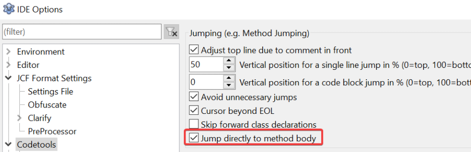
Salve a janela de Opções de IDE clicando em “OK”.